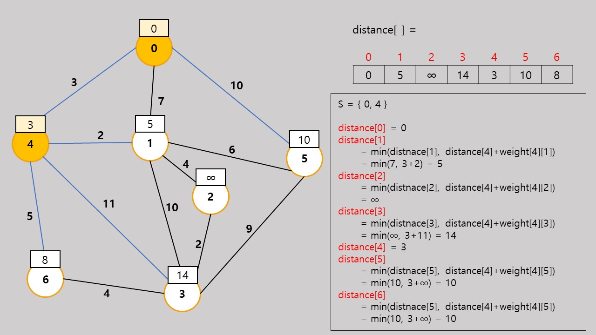

Dijkstra Algorithm에 대한 설명을 통하여,
Dijkstra 알고리즘의 원리를 이해합니다.
Dijkstra의 최단 경로 알고리즘은 네트워크에서 하나의 시작 정점으로부터 모든 다른 정점까지의 최단 경로를 찾는 알고리즘이다.
최단경로는 경로의 길이 순으로 구해진다.
먼저 집합 S를 시작 정점 v로부터의 최단경로가 이미 발견된 정점들의 집합이라고 하자.
Dijkstra의 알고리즘에서는 시작 정점에서 집합 S에 있는 정점만을 거쳐서
다른 정점으로 가는 최단 거리를 기록하는 배열이 반드시 있어야 한다.
이 1차원 배열을 distance라고 한다.
시작 정점을 v라 하면 distance[v]=0이고 다른 정점에 대한 distance 값은 시작정점과 해당 정점 간의 가중치 값이다.
가중치는 보통 가중치 인접 행렬에 저장되므로 가중치 인접 행렬은 weight이라 하면 distance[w]=weight[v][w]가 된다.
정점 v에서 정점 w로의 직접 간선이 없을 경우에는 무한대의 값을 저장한다.
시작단계에서는 아직 최단경로가 발견된 정점이 없으므로 S={v}일 것이다.
즉 처음에는 시작정점 v를 제외하고는 최단거리가 알려진 정점이 없다.
알고리즘이 진행되면서 최단거리가 발견되는 정점들이 S에 하나씩 추가될 것이다.
알고리즘의 각 단계에서 S안에 있지 않은 정점 중에서 가장 distnace값이 작은 정점을 S에 추가한다.
그 이유는 다음 그림에서 알아보자.
현재 S에 들어있지 않은 정점 중 에서 distance 값이 가장 작은 정점을 u라고 하자.
그러면 시작 정점 v에서 w까지의 최단 거리는 경로 ①이 된다.
만약 더 짧은 경로, 예를 들어 정점 w를 거쳐서 가는 가상적인 더 짧은 경로가 있다고 가정해보자.
그러면 정점 v에서의 정점 u까지의 거리는 정점 v에서 정점 w까지의 거리 ②는 경로 ①보다 항상 길 수 밖에 없다.
왜냐하면 현재 distance값이 가장 작은 정점은 u이기 때문이다. 다른 정점은 정점 u까지의 거리보다 항상 더 길것이다.
따라서 매 단계에서 집합 S에 속하지 않은 정점 중에서 distance의 값이 가장 작은 정점들을 추가해나가면
시작 정점에서 모든 정점까지의 최단거리를 구할 수 있다.
[STEP 1]
[STEP 2]
위의 예제에서는 정점 4가 가장 작은 값인 3을 가지고 있고,
이것은 실제로 정점 0에서 정점 4까지의 최단 경로이다.
그 이유는 다른 정점을 통과해서 정점 4로 가더라도 그 값은 3보다 클 수 밖에 없다.
그 이유는 다른 정점으로 가기위한 비용이 이미 3을 초과하기 때문이다.
일단 새로운 정점이 S에 추가되면 다른 정점들의 distance 값이 변경한다.
새로운 정점을 통해서 그 정점에 갈 수 있는 경로값이 현재의 distance 값보다 더 작으면,
현재의 distance 값을 새로운 경로값으로 변경한다.
위의 예에서는 정점 4를 통하여 6으로 갈 수 있고,
그 경로값이 8이므로 현재의 값인 ∞에서 14로 변경된다.
정점 1까지의 값인 7도 정점 4를 통하여 가는 값인 5가 더 작으므로 5로 변경된다.

[STEP 3]
[STEP 4]
[STEP 5]
[STEP 6]
[STEP 7]